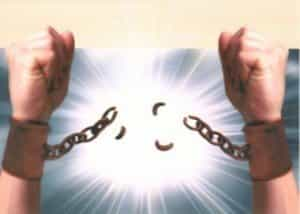

< < < Back
The Attitude Of Gratitude – Return Of Kings
Gratitude is not only the greatest of virtues, but the parent of all the others. – Marcus Tullius Cicero
The importance of gratitude in the character of the masterful man is undeniable. The master feels gratitude for himself, for his own noble identity as a man, even for the various vicissitudes that life throws at him to chisel him into evolving into a higher individual, and so on.
But the concept of gratitude has however become a very complicated subject, especially in today’s increasingly amoral times, where it has sometimes even been used by some to psychologically enslave others.
Furthermore, more often than not today, we either see a complete lack of gratitude in modern societies—or instead sometimes an excess of it (bordering sometimes on sycophancy) among supplicating betas. This is especially because of the blue piller’s inability to correctly perceive that the favors done to him by others may actually be ruses for the blue piller’s eventual obligated servitude out of gratitude later.
What is further to be noted at the same time is the increasing impetus of modern societies on practicing gratitude today, as we are often bombarded with messages in today’s modern societies that we must increasingly show it.
But are these messages always in good faith, or just another covert form of beta indoctrination? However to correctly practice gratitude, it then becomes extremely important to understand what gratitude in the context of today’s world is to begin with , but most importantly than all, when and towards whom to practice it.
The benefits of gratitude
Gratitude (noun): the quality of being thankful; readiness to show appreciation for and to return kindness.
We as human beings have natural instincts to show love, compassion, care and kindness to others. And it is perfectly natural to feel gratitude for the ones who show and give us the same. In fact, gratitude is intrinsically tied to loyalty, another of the hallmarks of a truly evolved man.
Cultivate the habit of being grateful for every good thing that comes to you, and to give thanks continuously. And because all things have contributed to your advancement, you should include all things in your gratitude. – Ralph Waldo Emerson
While we should be grateful for what we have, we should also make the best of what we have.
We should certainly count our blessings, but we should also make our blessings count.― Neal A. Maxwell
Indeed, there could be several reasons why one could and should adopt an attitude of gratitude. Gratitude and loyalty help to build character, trust, camaraderie and bridges among people, and eventually build tribes which later could transform into new civilizations.
Ideally, there is nothing wrong in showing gratitude, for gratitude itself is a noble virtue. But at the same time we must also know whom and when to show gratitude, for most people often today become the victims of misdirecting their gratitude due to their lack of red pill knowledge and social intelligence.
The abuse of gratitude in today’s increasingly amoral world

In spite of all the benefits that gratitude provides for the higher evolution of the human spirit and character, unfortunately in today’s modern degenerate societies it is not immune for abuse or corruption, just like other virtues.
Since gratitude (or the lack of it) is a part of one’s morality, it’s often abused by others to enslave mankind into soul-crushing servitude and misery. Robert Greene in The 48 Laws Of Power effectively describes how a favor can be used to ensnare a person into unknowing servitude and submission:
DESPISE THE FREE LUNCH: JUDGMENT
What is offered for free is dangerous-it usually involves either a trick or a hidden obligation. What has worth is worth paying for. By paying your own way you stay clear of gratitude, guilt, and deceit. It is also often wise to pay the full pee-there is no cutting corners with excellence. Be lavish with your money and keep it circulating, for generosity is a sign and a magnet for power.- Law No.40
It’s common for a lot of people to become victims of their own misdirected gratitude to beliefs, people, as well as relationships which didn’t offer them anything but misery in the long run. The fault of these people: their misguided belief that all these factors were actually doing a favor onto them, when in reality these people were simply victims of the “selective honesty and generosity” from these factors.
USE SELECTIVE HONESTY AND GENEROSITY TO DISARM YOUR VICTIM
One sincere and honest move will cover over dozens of dishonest ones. Open-hearted gestures of honesty and generosity bring down the guard of even the most suspicious people. Once your selective honesty opens a hole in their armor, you can deceive and manipulate them at will. A timely gift-a Trojan horse will serve the same purpose.– Law 12, The 48 Laws Of Power
One of the commonly seen ways to influence a man’s behavior towards your interests is to guilt-trip him or by creating a illusionary belief of obligatory gratitude in him towards you, out of a ‘favor’ (whether real or imaginary) done by you onto him.
MAKE OTHER PEOPLE COME TO YOU-USE BAIT IF NECESSARY
When you force the other person to act, you are the one in control. It is always better to make your opponent come to you, abandoning his own plans in the process. Lure him with fabulous gains-then attack. You hold the cards. – Law 8, The 48 Laws Of Power
And as seen in real life, a lot of blue pill men continue to fall for this bait, partly out of their inability to correctly perceive the real world and the real motives of those around them, and partly of the social indoctrination they are bred upon to become blind members of the herd mentality.
This sense of destructive gratitude is what continues to enslave, bind and destroy modern men who are unfree and trapped in unhealthy relationships, friendships, marriages, jobs, belief patterns and societies. Thus, it’s unfortunate to note that in today’s amoral world more than ever before, sometimes even a person’s morality and virtue often becomes a tool of slavery for those who would use it against him to enslave him.
It’s then common for such a man to be confronted with these questions at some point of his life in today’s modern societies:
- Do I have to be grateful for a woman who disrespects me and disregards my contributions for her and existence?
- Do I have to be grateful to a social system which tells me that it is working for my profit, but instead uses me as fuel to power its own ideologies which demeans my masculinity and threatens my own identity?
- Do I have to be grateful for a job which crushes my soul, and stunts my growth as an individual?
- It’s in my core essence as a man to show gratitude and other virtues, but are there any sincere people left who really deserve it and won’t use it to exploit me?
More often than not, the realization which occurs to him some point later is similar to the quote below:
Everything a lie. Everything you hear, everything you see. So much to spew out. They just keep coming, one after another. You’re in a box. A moving box. They want you dead, or in their lie… There’s only one thing a man can do – find something that’s his, and make an island for himself. – First Sgt. Edward Welsh, THE THIN RED LINE (1998)
And the commonly seen result is thus: the destruction of trust, and the rise of disgruntled, cynical men who disregard virtue as a weakness, and smirk at the mere mention of masculine virtues and morality.
Either way, it’s the values of true masculinity which suffer as a result, as modern men get increasingly lost when it comes to the choice of personal morality, and practicing masculine virtues – especially in modern societies which often exploit them for doing so.
Harry Browne effectively touches on the important and debatable subject of morality in today’s world in his best seller How I Found Freedom In An Unfree World. He mentions:
Morality is a powerful word. Perhaps even more powerful is the word immoral. In an attempt to avoid being labeled immoral, many people allow themselves to be manipulated by others.
It’s common to see modern (blue pill) men usually yield to the morality trap – a trap to which he devotes an entire chapter in his book. And yielding to that trap often ends up making a farce of the quality of gratitude, and virtue itself. Most of the time, people usually succumb to the absolute morality trap, described in the book as:
An absolute morality is a set of rules to which an individual is expected to surrender his own happiness.
There are two main characteristics of an absolute morality:
1. It presumably comes from an authority outside of the individual. It comes from someone or somewhere more important than the individual himself.
2. It proposes that the individual should be “moral” regardless of the consequences to himself. In other words, doing what is “right” is more important than one’s own happiness.
Most of the people who end up being victims of misdirecting their gratitude usually are the people who don’t correctly perceive the ulterior motives of those who favor them; yet these victimized people stand transfixed in their “morality” trap, regardless of the consequences that their gratitude may bring upon them – often suffering from an unwilling martyr syndrome.
But with such situations on the rise in the life of men who might end up being victimized out of a misguided sense of gratitude in dysfunctional relationships, careers, and societies, it then becomes very important for such men to detach their emotions from their discretionary powers to avoid being victims for a misguided sense of absolute morality.
Surviving the trap of forced gratitude

Freedom comes only from seeing the ignorance of your critics and discovering the emptiness of their virtue. — David Seabury
Mankind lives today in societies where amorality and power struggles is the name of the game in every aspect of human life, probably more so than in the past.
In today’s world where amoral power games abound right from the lowest strata of society right up to the highest, mankind is forced to strangulate its innate morality – which can entail potential loss of power in today’s ruthless world. Robert Greene states:
The most important of these skills, and power’s crucial foundation, is the ability to master your emotions. An emotional response to a situation is the single greatest barrier to power, a mistake that will cost you a lot more than any temporary satisfaction you might gain by expressing your feelings. Emotions cloud reason, and if you cannot see the situation clearly, you cannot prepare for and respond to it with any degree of control.
Anger is the most destructive of emotional responses, for it clouds your vision the most. It also has a ripple effect that invariably makes situations less controllable and heightens your enemy’s resolve. If you are trying to destroy an enemy who has hurt you, far better to keep him off-guard by feigning friendliness than showing your anger.
Love and affection are also potentially destructive, in that they blind you to the often self-serving interests of those whom you least suspect of playing a power game. You cannot repress anger or love, or avoid feeling them, and you should not try. But you should be careful about how you express them, and most important, they should never influence your plans and strategies in any way.
As mentioned, the ability to master his own emotions is the hallmark of the true master. Emotional detachment is one of the keys to developing a powerful foresight, which helps to sidestep the pitfalls of a misdirected morality and the eventual vicissitudes that modern life would eventually throw at men today.
That’s the difference between the red piller and the blue piller: the red piller is emotionally detached to the circumstances that life throws at him. He perceives the circumstances and people he is dealing with properly, and while being moral himself, he avoids the traps of a socially engineered forced morality which might be thrust on him.
The blue piller meanwhile shuttles between two extremes: he either blindly follows the herd’s equally blind morality which is expected of him, or sometimes he follows the other side of the spectrum – hating morality itself , which often further leads to the lack of development of masculine virtue in himself.
Conclusion
Gratitude need not have to come at the price of one’s dignity, honor and self respect. Gratitude indeed remains one of the core virtues of masculinity, but at the same time in today’s world, more often than not, it is often abused.
But to correctly understand and practice the attitude of gratitude, the solution remains unchanged: it’s imperative that one takes the red pill, for the red pill alone would grant the necessary ability to perceive and judge properly—unadulterated from the illusionary traps which would take away a person’s freedom—to practice gratitude to its highest expression to the ones who deserve it.
Read Next: How To Be A Man


{kind=link}
{kind=link}
{kind=link}